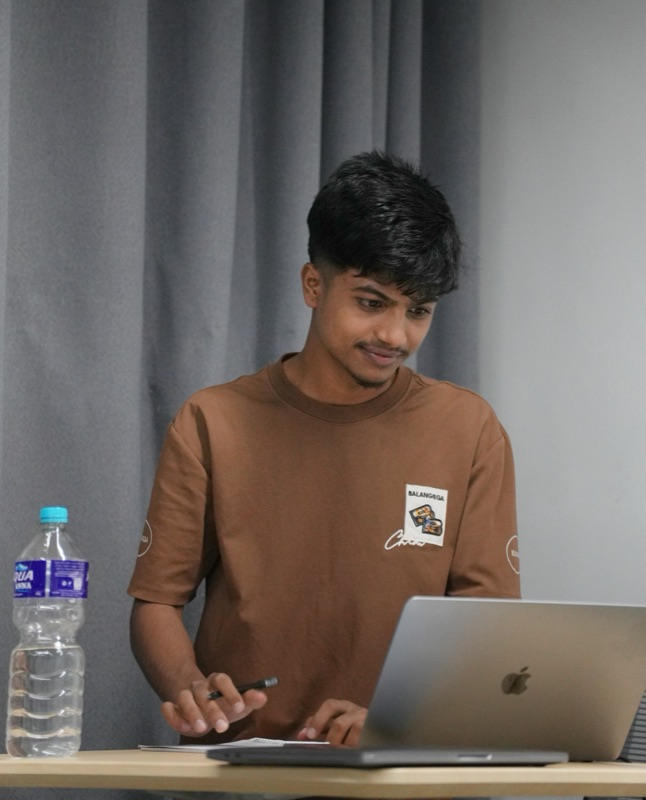

About me.
I'm a Computer Engineering student at IOE Pulchowk Campus, Nepal's top-ranked engineering school, specialising in AI and machine learning. What pulls me in is the full pipeline: not just training a model, but taking it from raw data through feature engineering, evaluation, and into something people actually use. That thread runs through everything in my work, from network security research to a published PyPI package.
Off the keyboard, there's a decent chance I'm watching cricket (or shouting at it), out on my bike hunting for a road I haven't ridden yet, or in some corner of Nepal I decided to visit on short notice. There's photographic evidence. Music runs in the background through all of it.
The habit I can't switch off: when a random problem crosses my mind, I have to build some version of the solution. That reflex is responsible for half of my projects, the articles I write on Medium, and the occasional hackathon win.

ankit.jpg- location
- Lalitpur, NP
- study
- IOE Pulchowk
- focus
- AI / ML
- role
- IT Club Secretary
timeline
Secretary, IT Club Pulchowk role
- Coordinate technical workshops and seminars for engineering students
- Python scripts automating internal communication and reporting workflows
- Supervise IT Club website development and digital assets
Seeds for the Future Fellow fellowship
- Intensive training on AI, 5G, cloud computing, and digital infrastructure
- Hands-on labs with AI applications and cloud-based systems
B.E. Computer Engineering education
+2 Science education
achievements
National Hackathon 2025
Held alongside the 4th National Telemedicine & 1st National Digital Health Conference. Built innovative solutions in digital health and telemedicine.
Best 1st-Year Electronics Project
Certificate and cash prize for an Arduino-based Parking Management System.